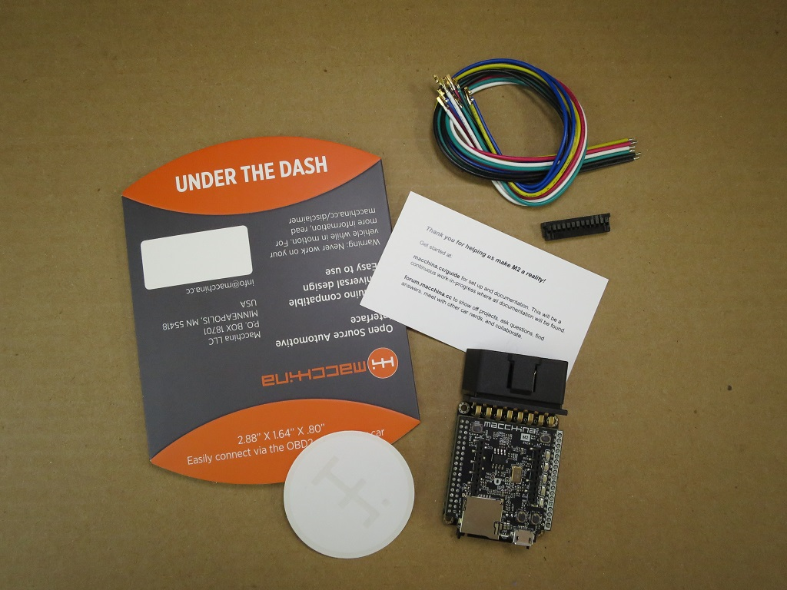

Getting Started
Skip to:
Programming with Arduino IDE - Get setup and run your first sketch on the Macchina M2.
Software & OS - Getting set up with some of the common tools.
Expansion Modules - Customize M2 by adding the things you need.
What’s in the Box?
Inside your box you should find the following:

- M2 (UTD or UTH)
- 26 pin cable harness kit
- 24 pin cable harness kit (UTH version only)
- Window sticker
- Start up card
Quick projects:
- Set up Arduino IDE
- Blink an LED
- Simple CAN tutorial
- Simple Communication tutorial
Enclosures:
It’s ok to do some initial setup before you have an enclosure, but before your M2 spends long periods in the car please consider protecting it. We have a few configurations of enclosures designed and ready for 3D printing. You can download the designs, tweak them as needed, print, share, lather, rinse, repeat.
Find more about enclosures here.